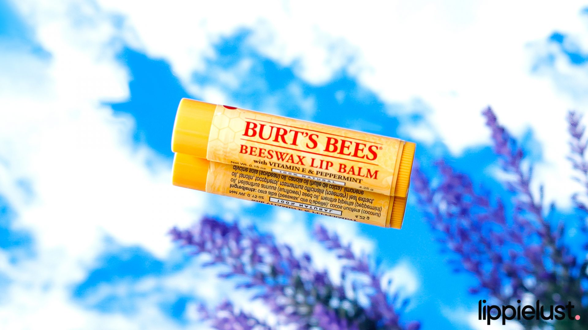
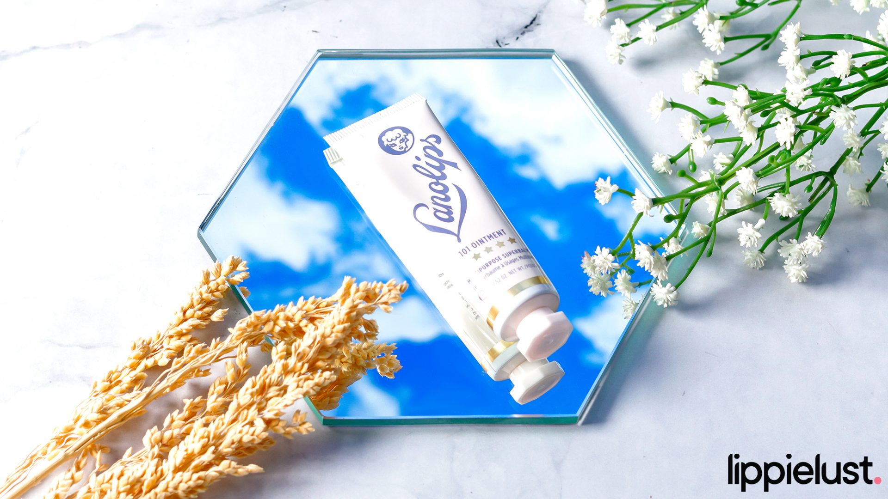

Dilabeli sebagai produk terbaik di beberapa platform selama beberapa waktu terakhir, Laneige Lip Sleeping Mask emang terbukti membantu menghidrasi kulit bibirmu. Teksturnya seperti salep, gak lengket dan memiliki aroma berry ringan yang gak akan mengganggu indera penciuman kita. Kombinasi kandungan antioksidan, hyaluronic acid, dan vitamin C memberikan kelembaban sepanjang malam. Bahkan bisa juga nih, lip mask ini menjadi base untuk pengaplikasian produk bibir lainnya di siang hari. Karena harganya yang murah (cuma 30 ribuan), Laneige Lip Sleeping Mask mini size sangat laris di pasaran.
Burt's Bees Original Beeswax Lip Balm

Produk lip balm klasik yang udah teruji tujuh turunan untuk tingkat hidrasinya. Karena formulanya yang sederhana dan tanpa Paraben, Burt’s Beeswax Balm menjadi favorit semua orang. It really has a convenient tubes – kamu bisa taruh di tas, makeup pouch, bahkan saku celana sekalipun! Untuk varian Original sendiri memiliki sensasi peppermint yang gak mengganggu, tapi kamu juga bisa mencoba varian lainnya. Kamu bisa menyisihkan uang sekitar 60 ribuan untuk mendapatkan lip balm ini.
Lanolips: The Originals 101 Ointment Multipurpose Superbalm

Seperti namanya, Lanolips mengandung minyak lanolin murni yang dipercaya dapat memberikan hidrasi untuk bibir kering dan pecah-pecah. Gak hanya itu, Superbalm ini juga bisa digunakan di seluruh area tubuh kamu yang mengalami ‘kekeringan.’ Selain Original, brand asal Australia ini juga memiliki versi tinted lip balm dengan warna-warna cantik yang gak kalah melembabkan. Karena teksturnya yang rich and thick, kamu bisa mengaplikasikan sedikit saja untuk bibirmu. Ringan, gak sticky, dan juga bakal ngasih efek mengkilap yang bakal bertahan hingga satu jam. Dari segi harga, Lanolips Superbalm emang terbilang cukup mahal yaitu 250 ribuan. But it’s worth the hype.
 Dilabeli sebagai produk terbaik di beberapa platform selama beberapa waktu terakhir, Laneige Lip Sleeping Mask emang terbukti membantu menghidrasi kulit bibirmu. Teksturnya seperti salep, gak lengket dan memiliki aroma berry ringan yang gak akan mengganggu indera penciuman kita. Kombinasi kandungan antioksidan, hyaluronic acid, dan vitamin C memberikan kelembaban sepanjang malam. Bahkan bisa juga nih, lip mask ini menjadi base untuk pengaplikasian produk bibir lainnya di siang hari. Karena harganya yang murah (cuma 30 ribuan), Laneige Lip Sleeping Mask mini size sangat laris di pasaran.
Dilabeli sebagai produk terbaik di beberapa platform selama beberapa waktu terakhir, Laneige Lip Sleeping Mask emang terbukti membantu menghidrasi kulit bibirmu. Teksturnya seperti salep, gak lengket dan memiliki aroma berry ringan yang gak akan mengganggu indera penciuman kita. Kombinasi kandungan antioksidan, hyaluronic acid, dan vitamin C memberikan kelembaban sepanjang malam. Bahkan bisa juga nih, lip mask ini menjadi base untuk pengaplikasian produk bibir lainnya di siang hari. Karena harganya yang murah (cuma 30 ribuan), Laneige Lip Sleeping Mask mini size sangat laris di pasaran.